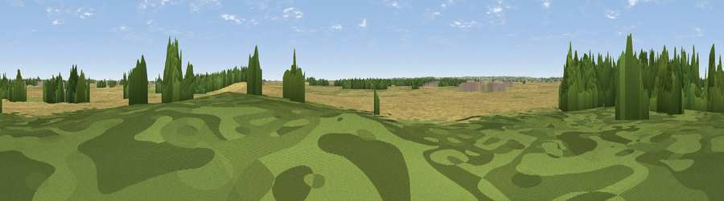

Kirkby Mount
#44722 in England · top 84% of its area beats it · near Kirkby la ThorpeThe view, rendered

A 360° render of this exact spot computed from the terrain model, tree cover and land cover — summer colours, afternoon light, calibrated against photographs of famous viewpoints. Real trees, hedges and buildings will differ in detail.
The panorama
Grey silhouette: terrain skyline in each direction (720 bearings, Earth curvature and refraction included). Dashed green: skyline with trees (+15 m) and buildings (+8 m) as obstacles. Blue strip: how far the ground is visible on each bearing.
Where the view opens
Wedge length = distance to the farthest visible ground on that bearing (vegetation-aware). Rings at 10, 25 and 50 km.
What fills the view
64% cropland · 19% woodland · 15% grassland · 1% built-up ·
Angular shares of the visible panorama (visual magnitude), not map area. Landscape diversity 0.43 (0–1 Shannon).
Key numbers
More beautiful places nearby
The staircase of upgrades: each row has a higher view potential than everything closer. Driving times are estimates from straight-line distance, calibrated against real road routing — check an actual route before setting out.
| Place | Direction | Drive | Score |
|---|---|---|---|
| Viewpoint near Ewerby | NE · 3 km | ~8 min | 28.0 |
| Viewpoint near Aisby | SW · 8 km | ~16 min | 38.1 |
| Normanton Hill | WNW · 14 km | ~25 min | 49.8 |
| Viewpoint near Belton | WSW · 15 km | ~27 min | 51.0 |
| Viewpoint near Wellingore | NW · 17 km | ~30 min | 52.5 |
| Viewpoint near Great Gonerby | WSW · 20 km | ~34 min | 62.0 |
| Viewpoint near Belvoir | WSW · 29 km | ~46 min | 70.8 |
| Viewpoint near Claxby | N · 51 km | ~73 min | 71.5 |
52.98236, -0.37162 · source: osm peak · position refined by local search. Computed location — check access rights before visiting.